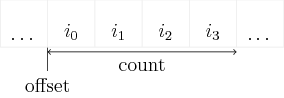

crowddynamics.core.interactions package¶
Subpackages¶
- crowddynamics.core.interactions.tests package
- Submodules
- crowddynamics.core.interactions.tests.test_block_list module
- crowddynamics.core.interactions.tests.test_block_list_benchmark module
- crowddynamics.core.interactions.tests.test_distance module
- crowddynamics.core.interactions.tests.test_interactions module
- crowddynamics.core.interactions.tests.test_interactions_benchmark module
- crowddynamics.core.interactions.tests.test_interactions_mt module
- Module contents
Submodules¶
crowddynamics.core.interactions.block_list module¶
Block List¶
Since crowd simulations are only dependent on interactions with agents close by we can partition the space into smaller chunk in order to avoid having to loop with agents far a away.
![% Measures
\draw[<->] (-0.1, 0) -- node[left] {$n$} ++(0, 8);
\draw[<->] (0, -0.1) -- node[below] {$m$} ++(12, 0);
\draw[<->] (-0.3, 0) -- node[left] {$c$} ++(0, 1);
\draw[<->] (0, -0.3) -- node[below] {$c$} ++(1, 0);
% Grid
\draw[color=gray!20] (0, 0) grid (12, 8);
\draw[thick, <->] (13, 6)
-- node[left] {$y$} ++(0, -1)
-- node[below] {$x$} ++(1, 0);
\draw[] (4.5, 5.7) circle (1pt) node[below] {$\mathbf{p}_i$};
\draw[dashed] (4.5, 5.7) circle (1);
\draw[<->] (4.5, 5.7) -- node[below] {$r$} ++(45:1);](../_images/tikz-702a411ad82cfa8f72fe4e8bfdfd3b355d69c0f7.png)
Example of block list partitioning
Block list means partitioning scheme where the bounding box of points
\(\mathbf{p}_i\) is partitioned into a grid of shape \(n \times m\)
with cell size of \(c\).
Algorithm
Cell size is equal to the interaction range \(c = r\).
Get the indices of the block the point \(\mathbf{p}_i\) belongs to
\[\mathbf{l}_i = \left\lfloor \frac{\mathbf{p}_i}{c} \right\rfloor, \quad i \in [0, N-1]\]Crate array
countof counts of how many points belong to each block.Crate array
index_listfor indices of agents in each block.
Crate array
offsetfrom cumulative sum of counts to track the starting index of indices inindex_listarray when querying agents in each block.
Iteration¶
Iterating over block list.
-
class
crowddynamics.core.interactions.block_list.MutableBlockList(cell_size, default_list=<class 'list'>)[source]¶ Bases:
objectMutable blocklist (or spatial grid hash) implementation.
Dictionary where the key is index of a block/cell and values are a list of items belonging to that block/cell.
>>> {(0, 1): [1, 3, 4], (1, 2): [2]}
-
crowddynamics.core.interactions.block_list.block_list[source]¶ Block list partitioning algorithm
BlockList algorithm partitions space into squares and sorts points into the square they belong. This allows fast neighbourhood search because we only have to search current and neighbouring cells for points.
Parameters: - points (numpy.ndarray) – Array of \(N\) points \((\mathbf{p}_i \in
\mathbb{R}^2)_{i=1,...,N}\) (
shape=(size, 2)) to be block listed - cell_size (float) – Positive real number \(c > 0\). Width and height of the rectangular mesh.
Returns: index_listcountoffsetshape
Return type: (numpy.ndarray, numpy.ndarray, numpy.ndarray, numpy.ndarray)
- points (numpy.ndarray) – Array of \(N\) points \((\mathbf{p}_i \in
\mathbb{R}^2)_{i=1,...,N}\) (
-
crowddynamics.core.interactions.block_list.get_block[source]¶ Multidimensional indexing
1-D: [...] dims: n0 key: x0 index: x0 2-D: [[...], [...]] dims: (n0, n1) key: (x0, x1) index: x0 * n1 + x1 3-D: [[[...], [...]], [[...], [...]]] dims: (n0, n1, n2) key:(x0, x1, x2) index: x0 * n1 * n2 + x1 * n2 + x2 (x0 * n1 + x1) * n2 + x2
Parameters: indices (numpy.ndarray | tuple) – Returns: Return type: numpy.ndarray
crowddynamics.core.interactions.distance module¶
Distance functions for potentials.
Some of the functions also compute rotational moments for computing torque like
-
crowddynamics.core.interactions.distance.distance_circle_line[source]¶ Skin-to-Skin distance between circle and line
Parameters: - x (numpy.ndarray) –
- r (float) –
- p0 (numpy.ndarray) –
- p1 (numpy.ndarray) –
Returns: (skin-to-skin distance, normal vector)
Return type: (float, numpy.ndarray)
-
crowddynamics.core.interactions.distance.distance_circles[source]¶ Skin-to-Skin distance \(h\) with normal \(\mathbf{\hat{n}}\) between two circles.
\[\begin{split}h &= \|\mathbf{x}_0 - \mathbf{x}_1\| - (r_0 + r_1) \\ \mathbf{\hat{n}} &= \frac{\mathbf{x}_0 - \mathbf{x}_1}{\|\mathbf{x}_0 - \mathbf{x}_1\|}\end{split}\]Parameters: - x0 (numpy.ndarray) –
- r0 (float) –
- x1 (numpy.ndarray) –
- r1 (float) –
Returns: (skin-to-skin distance, normal vector)
Return type: (float, numpy.ndarray)
-
crowddynamics.core.interactions.distance.distance_three_circle_line[source]¶ Skin-to-Skin distance between three circle model and line
Parameters: - x ((numpy.ndarray, numpy.ndarray, numpy.ndarray)) –
- r ((float, float, float)) –
- p (numpy.ndarray) –
Returns: (float, numpy.ndarray, numpy.ndarray)
-
crowddynamics.core.interactions.distance.distance_three_circles[source]¶ Skin-to-Skin distance \(h\) with normal \(\mathbf{\hat{n}}\) and rotational moments \(\mathbf{r}_{\mathrm{moment}_i}\) between two three-circle models with.
\[\begin{split}X_i &= \{\mathbf{x}_{torso}, \mathbf{x}_{left shoulder}, \mathbf{x}_{right shoulder} \} \\ R_i &= \{r_{torso}, r_{shoulder}, r_{shoulder} \}\end{split}\]\[h = \min_{(\mathbf{x}_0, r_0) \in (X_0, R_0)} \min_{(\mathbf{x}_1, r_1) \in (X_1, R_1)} \left( \|\mathbf{x}_0 - \mathbf{x}_1\| - (r_0 + r_1) \right)\]With minimized values of \(\mathbf{x}_0\), \(\mathbf{x}_1\), \(r_0\) and \(r_1\) compute
\[\begin{split}\mathbf{\hat{n}} &= \frac{\mathbf{x}_0 - \mathbf{x}_1}{\|\mathbf{x}_0 - \mathbf{x}_1\|} \\ \mathbf{r}_{\mathrm{moment}_0} &= \mathbf{x}_0 + r_0 \mathbf{\hat{n}} - \mathbf{x}_{\mathrm{torso}} \\ \mathbf{r}_{\mathrm{moment}_1} &= \mathbf{x}_1 - r_1 \mathbf{\hat{n}} - \mathbf{x}_{\mathrm{torso}}\end{split}\]Parameters: - x0 ((numpy.ndarray, numpy.ndarray, numpy.ndarray)) –
- r0 ((float, float, float)) –
- x1 ((numpy.ndarray, numpy.ndarray, numpy.ndarray)) –
- r1 ((float, float, float)) –
Returns: Return type: (float, numpy.ndarray, numpy.ndarray, numpy.ndarray)
crowddynamics.core.interactions.interactions module¶
Interactions¶
Mathematically agent-agent and agent-obstacle interactions are governed by summing over all agent-agent or agent-obstacle pairs. This is analogous to n-body problems in physics.
Interactions between agents
Interactions between agents and obstacles
Brute Force Summation¶
Number of iterations for set of \(N > 0\) agents
Number of iterations for two disjoint sets of \(N > 0\) and \(M > 0\) agents
Because the computational complexity of naive brute force summation scales \(\mathcal{O}(N^2)\) it is unfeasible to use for large numbers of agents.
Block List Summation¶
Iterations per block
Number of iterations if maximum number of agents that can be fit into a cell is \(M\) is some constant.
Iterations per block
For \(N\) agents the number of blocks \(N / M\).
-
crowddynamics.core.interactions.interactions.agent_agent_block_list_circular[source]¶ Iteration over all agents using block list algorithm.
-
crowddynamics.core.interactions.interactions.agent_agent_block_list_three_circle[source]¶ Iteration over all agents using block list algorithm.
-
crowddynamics.core.interactions.interactions.agent_agent_brute_circular[source]¶ Compute interaction forces between set of agents using brute force.
-
crowddynamics.core.interactions.interactions.agent_agent_brute_disjoint_circular[source]¶ Compute interaction forces between two disjoint sets and of agents using brute force. Disjoint sets
indices_0 ∩ indices_1 = ∅.
-
crowddynamics.core.interactions.interactions.agent_agent_brute_disjoint_three_circle[source]¶ Compute interaction forces between two disjoint sets and of agents using brute force. Disjoint sets
indices_0 ∩ indices_1 = ∅.
-
crowddynamics.core.interactions.interactions.agent_agent_brute_three_circle[source]¶ Compute interaction forces between set of agents using brute force.
-
crowddynamics.core.interactions.interactions.agent_agent_interaction_circle[source]¶ Interaction between two circular agents.
-
crowddynamics.core.interactions.interactions.agent_agent_interaction_three_circle[source]¶ Interaction between two three circle agents.
-
crowddynamics.core.interactions.interactions.agent_obstacle_interaction_circle[source]¶ Interaction between circular agent and line obstacle.